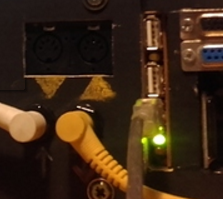
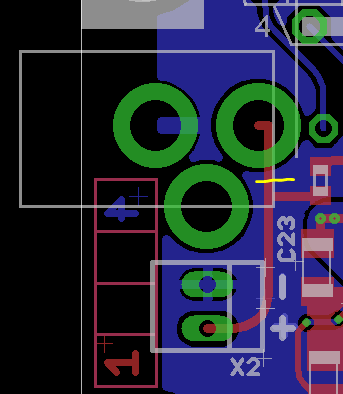

I believe the easiest solution with USB cable as power only, is to hack them together from one USB output, this is what I have done from a 5v 4A power supply, I cut 4 usb cables and connect them at the + and - in parallel, made sure the signal cables were out of the way, and your done. But with a battery you need to ensure that you are not pulling more amps than the battery can provide, they may over heat and get permanently damaged. Don't know how many Axo's a power bank could take.
Power Supply for stand alone use
Gavin
#41
SirSickSik
#42
well, I got it up and running yesterday using small usb-cables, so I know it has enough power to do this. BUT I want to get rid of these internal usb-cables as it's just a bit too tight a fit and I'm scared I might break the usb-inputs after a while... I just want to use these as little as possible (only updating the board with new patches)
Seeing that it is able to power them all up, I know pretty sure that there should also be a way to hardwire the 5v input from the usb-input of one board to some other boards, right?
So the only single question I would love to have anwsered... which pins/sockets?
There gotta be someone who knows..
ps. if some current/overvoltage protection is needed, it's ok, I got more then enough components laying around for that, but I do want to keep it as small and simple as possible. The less I need to add, the less I'm able to screw up..
Blindsmyth
#43
The usb connector is also reacheble from these points:
https://sebiik.github.io/community.axoloti.com.backup/uploads/default/original/2X/0/04b29bad92077c63ce3399bb8bb9f90795dbf619.png
So you can feed the 5v to Vbus and Ground to Gnd obviously!
Another point would be between the dc part and the main board.
https://sebiik.github.io/community.axoloti.com.backup/uploads/default/original/2X/d/d3caa27d2e2236f06b06ae7589ea7c6cd868dd7c.png
Gavin
#44
The problem with the USB inputs, is they are limited to only draw a certain amount of amps.
If you come out of a board to supply another etc, each time the amount of amps available will be the limit on the first usb input, minus the demand for each device thereafter.
The other thing you could do, is to add a small usb extension, so instead of plugging and unplugging from the board all the time, you plug unplug from the extension, that way you won't break the inputs as they will stay permanent. Kind of similar to what I did here,the picture shows USB plugged cable from the computer into a female USB A input, under which it is then connect to the Axo Micro USB ports, and because the Axo is in the enclosure, the Micro USB connection will never be changed unless I open the enclosure up..

spacelordmother
#45
@johannes -- does the 3rd leg on the power jack connect to anything? I checked the datasheet and it says it's an insert detection pin. I want to desolder this jack and use a panel mount wired to the pads but want to make sure I don't need anything special.
This is the jack I am thinking of: https://www.mammothelectronics.com/products/4sjk-101dcxt

spacelordmother
#49
Just wanted to call out/confirm that even though the silkscreen shows the correct polarity, it is flipped in relation to the correct pins/pads on the board:

{kind=link}
Ground pad is closer to edge of the board and power/pin is inside, but diagram is flipped. I know there's a protection diode for reverse polarity, but always good for people to know.
lokki
#50
that sign is not showing the polarity of the solder points but is a standard sign for the adapter polarity (also found on boss/roland pedals etc.) in that case that would mean the inner lug of the connector is positive while the outer "frame" is negative.
is this reversed as well? i don't think so.
spacelordmother
#51
No- you're right, but having it printed like that makes it seem like a label for the pads, which it is not. Just trying to prevent people (like me) from frying their board. 
JonnyAngle
#52
I've read this thread 3 times. I plan on using the axo as a "guitar pedal" so I will be using a voodoo labs pedalpower2+ at 9v.
What is the amperage I will need if I'm NOT plugging anything in to the usb?
xoanxil
#55
I would like to use Axoloti in stand alone mode conected to a power supply. How about if I use a 13.5V and 3.0A. I am not conecting anything else to the Axoloti.
I rather to ask before to try...
Thanks
jfcharles
#56
It's going to be fine. Amps just need to be "enough", so if it's 3 A, it's much more than needed, but not dangerous at all, it's just a Max value your power supply will give if needed.
Chindogu
#58
Mi first step with Axoloti just arrived some hour ago: a 7,5 V 1.6 A it´s OK?
I´m trying to turn ON and get recognized with micro USB without success:
No available USB device found with matching PID/VID
Then try to flash firmware with S1 button and notthing
No devices in DFU mode detected. To bring Axoloti Core in DFU mode, remove power from Axoloti Core, and then connect the micro-USB port to your computer while holding button S1. The LEDs will stay off when in DFU mode.
watamacha
#59
I believe it can accept a range of input voltages, from about 7-12v or something like that. I think its somewhere on one of the product pages. I use a 9v supply for my projects because it lets you add in battery power via AAs pretty easily. make sure its a linear regulated supply for the least noise and be careful not to confuse it with guitar pedal supplies, which can be similar voltage and identical connector but with reversed polarity
edit: from the product page:
DC input (7-15V, 2.1mm center pin, center pin positive)
brainsalt
#60
Hello! This is my first post - I apologise if the answer is elsewhere in the documentation or forum, but I can't seem to find it.
If I want to use a cellphone or tablet charger via the micro-USB input for power, are the power requirements the same as listed above for the regular DC pin?
i.e. "Any supply between 7V and 15V is fine, the current it needs to deliver depends on what you plug into the USB host port. Rough ballpark figures: at 7V, 700mA is fine, at 15V, 250mA is enough"
If so, I have a fast-charge adapter that offers 5V, 3A or 9V, 1.6A or 12V, 1.2A. Will it automatically select the right voltage and amperage?
Thanks in advance!
Harry